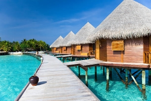
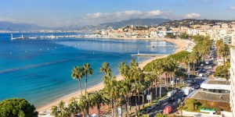
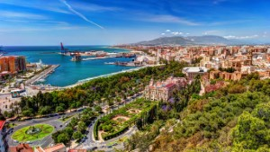
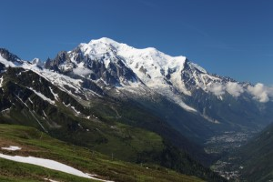
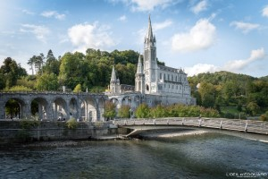
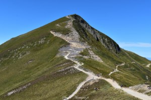
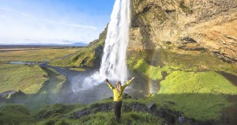
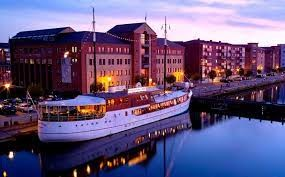
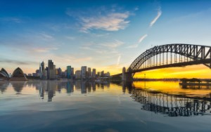

Notre Catalogue de Séjours
Séjours Bord de Mer
Séjour en Corse
Emplacement : Bord de Mer
Activité : Sport Nautique
Pays : France
Durée : 1 semaine
Prix : 600€
L’hôtel Stella Di Mare 3* est situé dans le magnifique golfe d’Ajaccio en Corse, face aux célèbres iles sanguinaires, à 7 km du centre-ville. Il est desservi en direct par le bus N°5. L’aéroport d’Ajaccio est à 15km.
Séjour à Cannes
Emplacement : Bord de Mer
Activité : Sport Nautique
Pays : France
Durée : 1 semaine
Prix : 600€
Cannes, ville balnéaire de la Côte d'Azur, est célèbre pour son festival international du film. La Croisette, boulevard qui longe la côte, est bordée de plages de sable fin, de boutiques de luxe. Ce boulevard abrite également le Palais des Festivals et des Congrès.
Séjour à Malaga
Emplacement : Bord de Mer
Activité : Sport Nautique
Pays : Espagne
Durée : 1 semaine
Prix : 600€
Outre ses 16 plages ensoleillées, cette ville andalouse baignée par la Méditerranée possède une vie culturelle très riche. Au cours de ces dernières années, Malaga, ville natale de Pablo Picasso, s’est réinventée et a inauguré des musées pour tous les goûts.
Séjours à la Montagne
Mont blanc & Beaufort
Emplacement : Montagne
Activité : Randonnée
Pays : France
Durée : 1 semaine
Prix : 600€
Beaufort est une commune française située dans le département de la Savoie, en région Auvergne-Rhône-Alpes. La commune est la principale localité du Beaufortain qui lui doit son nom. La station touristique d'été et d'hiver d'Arêches-Beaufort est englobée dans le périmètre de la commune.
Séjour à Lourdes
Emplacement : Montagne
Activité : Randonnée
Pays : France
Durée : 1 semaine
Prix : 600€
Lourdes est une ville du sud-ouest de la France, au pied des Pyrénées. Elle est connue dans le monde entier pour les sanctuaires Notre-Dame de Lourdes, ou le Domaine, un site de pèlerinage catholique. Chaque année, des millions de personnes visitent la grotte de Massabielle où, en 1858, la Vierge Marie serait apparue à une jeune fille. Les pèlerins peuvent boire ou se baigner dans l'eau qui coule d'une source dans la grotte.
Séjour à Chastreix & Puy de Sancy
Emplacement : Montagne
Activité : Randonnée
Pays : France
Durée : 1 semaine
Prix : 600€
Le puy de Sancy est un sommet des monts Dore situé dans le département du Puy-de-Dôme, à 35 kilomètres au sud-ouest de Clermont-Ferrand. C'est, avec ses 1 885 mètres d'altitude, le point culminant du Massif central et le plus haut volcan en France métropolitaine.
Séjours Internationaux
Séjour à Seljalandsfoss
Emplacement : Bord de Mer
Activité : Visite
Pays : Islande
Durée : 1 semaine
Prix : 1000€
La Seljalandsfoss est une chute d'eau du sud de l'Islande mesurant 65 mètres de hauteur. Elle se trouve à proximité de la chute de la Skogafoss. Sa particularité est la possibilité de passer derrière ce qui offre un nouveau point de vue et la rend plus impressionnante. Au coucher de soleil, la lumière rend l'eau d'une couleur orangée se fondant ainsi à la roche derrière celle-ci.
Séjour à Aalborg
Emplacement : Milieu urbain
Activité : Découverte
Pays : Danemark
Durée : 1 semaine
Prix : 600€
Aalborg ou Ålborg est une ville du Danemark située dans le Jutland. En janvier 2014, la ville compte 139 016 habitants et est la quatrième ville la plus peuplée du pays. Elle est le chef-lieu de la commune homonyme, de la région du Jutland du Nord.
Séjour à Sydney
Emplacement : Bord de Mer
Activité : Sport Nautique
Pays : Australie
Durée : 1 semaine
Prix : 900€
Sydney, capitale de la Nouvelle-Galles du Sud et l'une des plus grandes villes d'Australie, est renommée pour son opéra situé dans le port, avec son design distinctif en forme de voiles. Le vaste Darling Harbour et le plus petit port de Circular Quay sont des pôles majeurs de la vie au bord de l'eau, à proximité du Harbour Bridge et des jardins botaniques royaux.